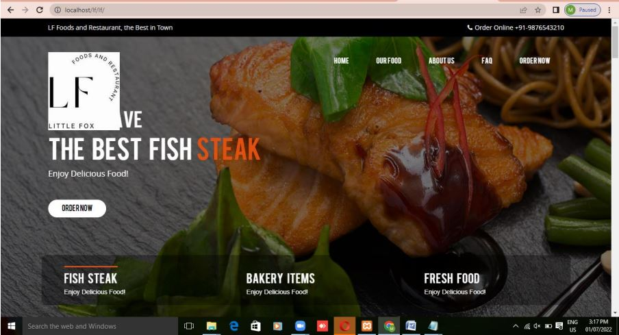

1) FOOD HUB
It is a web application for ordering food online,it is user friendly.
The purpose of Food Hub is to automate the existing manual system by the help of computerized equipment’s and full-fledged computer software,fulfilling their requirements, so that their valuable data/information can be stored for a longer period with easy accessing and manipulation of the same.The required software and hardware are easily available and easy to work with.
Food Hub, as described above, can lead to error free, secure, reliable and fast management system. It can assist the user to concentrate on their other activities rather to concentrate on the record keeping. Thus it will help organization in better utilization of resources. The organization can maintain computerized records without redundant entries. That means that one need not be distracted by information that is not relevant, while being able to reach the information.

2) BLOOD BANK MANAGEMENT SYSTEM
The BLOOD BANK MANAGEMENT SYSTEM is great project. This project is designed for successful
completion of project on blood bank management system. The basic building aim is to provide blood
donation service to the city recently. Blood Bank Management System (BBMS) is a browser based system
that is designed to store, process, retrieve and analyze information concerned with the administrative and
inventory management within a blood bank. This project aims at maintaining all the information pertaining
to blood donors, different blood groups available in each blood bank and helps them manage in a better
way. Aim is to provide transparency in this field, make the process of obtaining blood from a blood bank
hassle free and corruption free and make the system of blood bank management effective.
3)BOOK REVIEW
Book review includes an authentication system and is only accesable to logged in users, Anyone can provide credentials and register a new user in order to later log in with these credentials.
Once logged in, users arrive at the home page and can search for a book to review by its title, author or isbn number. The website will redirect users to the results page containing all the books that matched the search.
Users can then click on any book in order to access it's details: title, author, year, isbn number. The website also display the number of reviews and the average rate that the book has received on GoodReads (if available). On the book detail page users will also view all the reviews and ratings that have been submitted for this book on the website. Users will also be able to submit their own review for the book, including a rate between 1 to 5 and a textual review.
4)EMOTION DETECTION SYSTEM
The music choice of a user is not only dependent on historical preferences or music contents but also dependent
on the mood of that user. In this paper, we present an effective music recommendation system, which
recommends music based on the real-time mood of the user. It mainly focuses on Convolutional Neural
Network (CNN) model which is based on Mobile Net architecture that classifies 7 different human facial
emotions. Our system consists of three modules: Emotion Module, Music Classification Module and the
Recommendation Module. The Emotion Module takes an image of the user's face as an input and makes use
of CNN to identify their present mood. The Music Classification Module makes use of audio features to
achieve a remarkable result of 98% while classifying songs into 4 different mood classes.